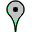

<!--The content below is only a placeholder and can be replaced.-->
<div style="text-align:center">
  <h1>
    Welcome to {{ title }}!
  </h1>
</div>
<nav>
  <a (click)="getPointsOfAttentionService('')">
      
  </a>
  <a (click)="getPointsOfAttentionService('green')">
      
  </a>
  <a (click)="getPointsOfAttentionService('orange')">
      
  </a>
  <a (click)="getPointsOfAttentionService('red')">
      
  </a>
</nav>
<!-- this creates a google map on the page with the given lat/lng from -->
<!-- the component as the initial center of the map: -->
<agm-map [latitude]="lat" [longitude]="lng" [zoom]="zoom">
  <agm-marker *ngFor="let pAItem of pAItems" [latitude]="pAItem.lat" [longitude]="pAItem.lng"
      [iconUrl]="pAItem.iconUrl">
  		<agm-info-window>{{ pAItem.description}}</agm-info-window>
  </agm-marker>
</agm-map>
